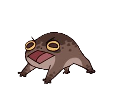

Odkaz Dračích jezdců:
Eragon se vyskytuje ve všech čtyřech příbězích, má vlastního draka jménem Safira, umí kouzlit a dokáže se myslí spojit s jakýmkoli jiným živým tvorem.
Také ovládá starověký jazyk elfů.
První díl: Od mladého farmáře k jednomu z nejslavnějších Dračích jezdců, tento famózní vývoj života zasáhl mladého Eragona., který šel na lov a našel modrý kámen.
Eragonovi se vylíhla Safira a on musel po nějaké době odejít pryč z rodné vesnice. Eragona na jeho cestě doprovází vesnický vypravěč Brom.
Eragon se spřátelí s Murtaghem, synem nejvěrnějšího z 13 Křivopřísežníků, najde spoutanou elfku a stane se nadějí Vardenů, vzbouřenců.
Hraju, Abych žil:
Světem 30. let 21. století hýbe záhadný fenomén vtažení: vědomí hráče online hry se oddělí od těla a zůstane uvězněno ve virtuální realitě.
Gleb neměl na výběr, nevyléčitelná nemoc ho donutila vtažení záměrně podstoupit. Ve hře ho čeká věčný život, noví přátelé a nekonečné dobrodružství v úchvatném světě meče a magie.
Cyberpunk:
V tomto světě jedinec nic neznamená, za osud společnosti jsou zodpovědné velké korporace a gangy
Zločin a nelegální kšefty s čímkoli jsou zde na denním pořádku.
Shey Scott, bývalý policista, jenž kvůli smrtelné chorobě skončil ve službě, se se svým parťákem Louem Landonem vydává po stopách Alex Stallerové, dvojčete ženy, která za bílého dne z neznámých důvodů zavraždila více než deset lidí.
Bonus:
